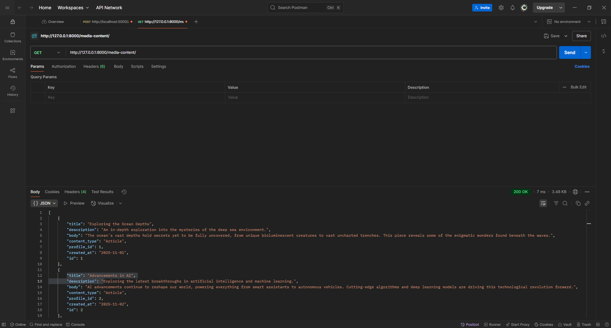
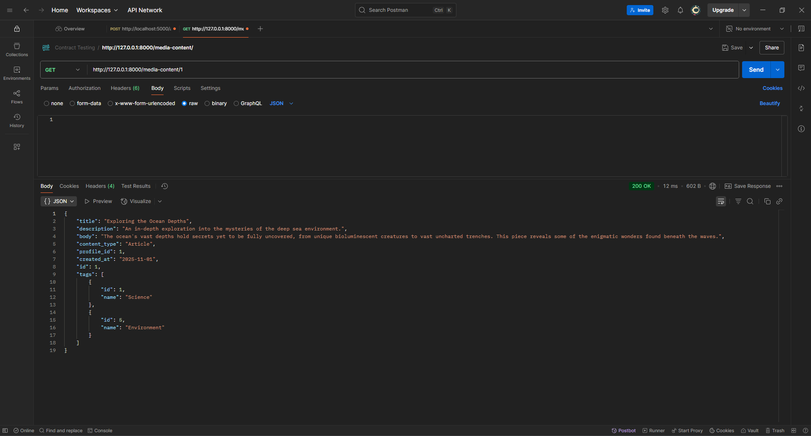
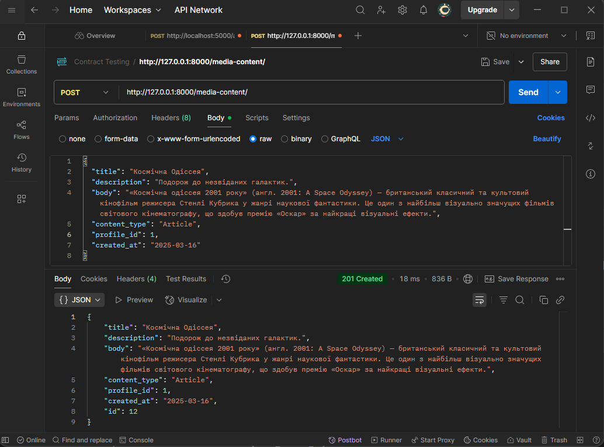

Тестування працездатності системи
В цьому розділі необхідно вказати засоби тестування, навести вихідні коди тестів та результати тестування.
Передумови
Тестування функціонування сервісів
GET: Отримати список усіх елементів медіаконтенту
GET: Отримати медіаконтент за ID
POST: Створити новий медіаконтент
PUT: Оновити існуючий медіаконтент